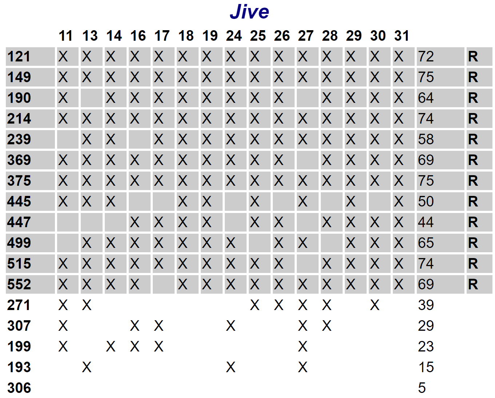
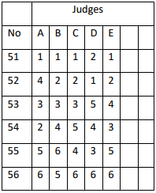
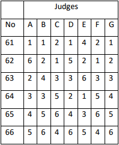
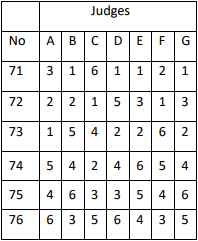
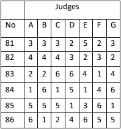
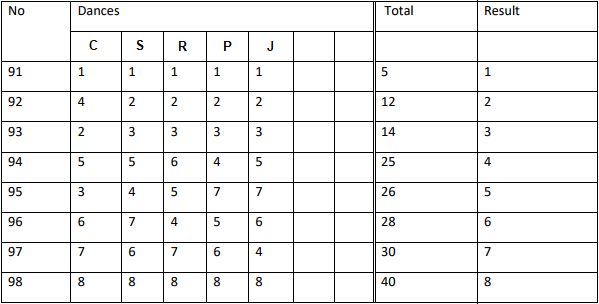

Skating System
1 November 2017
Many competitors are vaguely familiar with how judging works - there are a number of judges who mark down the numbers on the backs of the couples they like. In reality, it's a bit more intricate than that. Introduced for the first time at the 1937 Blackpool Dance Festival, the Skating system consists of only 11 rules. This system has governed competitive Ballroom Dancing for 80 years, and can sometimes be confusing, like when a couple wins 1st place without a single judge marking them 1st! Although the Skating System is complex, this article will attempt to offer as simple an overview as possible.
Rule 1: Preliminary Rounds
Rule 1: In all preliminary rounds, judges shall call back the number of couples requested by the Chairman of Judges
This rule applies to all rounds that are not finals, i.e. semifinals, quarterfinals, etc. Let's say there are 48 couples dancing in Professional Latin. Since all finals consist of six to eight couples (unless there are fewer than six who have signed up for the event), these 48 couples dancing in Professional Latin need to be widdled down until there are only six to eight couples remaining. The Chairman of Judges will probably reason that if the 48 couples are cut by half, there will be 24; if those 24 are cut by half, there will be 12; and if those 12 are cut by half, there will be six. For that reason, during the first round, he will order the judges to recall 24 of 48 couples. In the second round, he will order the judges to recall 12 of 24 couples, and so on. Rule 1 simply states that the judges shall do as they are told, each calling back the required number: no more, no fewer.
But what does it mean to call back a couple? Well, the judge essentially has a blank piece of paper, and when he sees a couple he likes, he writes their number down. When the judge has determined who the best 24 couples are, he stops writing numbers down. A judge will do this for each dance, and for Professional Latin there are five dances (Cha Cha, Samba, Rumba, Paso Doble, and Jive). This means that for Professional Latin, each judge will have five call back sheets. If a judge likes a couple's dancing in Cha Cha but not in Samba, he will write down their number on the Cha Cha sheet, but not on the Samba sheet.
Now, let's say there are five judges. This means that if you are dancing in Professional Latin and all the judges like your Cha Cha, you will amass five points. If all five like your Samba, too, you will have amassed ten points. If all five like all of your dances, then you will have amassed 25 points. Remember the Chairman of Judges ordered that 24 of the 48 couples should be recalled, and therefore the 24 couples with the most call backs will make it to the subsequent round. This process will be repeated until the final.
Here is an example of tabulated call backs. This is a Latin event, with five dances, 17 competitors, and 15 judges (meaning the maximum number of callbacks a couple could receive would be 75).
The Chairman of Judges had ordered 12 of 17 couples be recalled to the next round, and the 12 couples with the most points have had their rows highlighted in grey, with an R on the right hand side.
Rules 2-4: Placing Couples in the Final
Rule 2: In a final round, all couples shall receive a placement from each judge
Rule 3: In a final round, a judge's first choice shall be marked '1,' second choice '2,' and so on
Rule 4: In a final round, a judge may not tie any couples for any place of any dance
These rules are fairly straight forward, and govern the way the judges should mark the final.
Rule 5: Coming to a Consensus
Rules 5-11 don't come in compact single sentence form, but rule 5 handles how to interpret the judges' marks. Since there are always multiple judges, what happens if one judge marks you 1st place in a final, and another judge marks you 2nd place? The final results are determined by who has the majority.
Let's take the example shown below. Here, there are five judges: A, B, C, D, and E. There are also six competitors: 51, 52, 53, 54, 55, and 56. At their intersection, you can see how each judge placed each couple.
Since there are five judges, three of them constitute a majority. First, it must be determined who has the majority of 1st places. Couple 51 has four out of five possible 1st places, and since they meet the three needed to hold a majority, they are awarded 1st place. Next, it must be determined who has the majority of marks that are 2nd place or higher (important: not just 2nd place, but 2nd place or higher). Out of five judges, four of Couple 52's marks are 2nd place or higher, and since they meet the requirement needed to hold a majority, they are awarded 2nd place. This is continued until there is only one couple remaining, who are then awarded last place.
If a couple has a majority of (let's say) 1st places, it does not matter what their other marks are, whether they are all five 1st places or three 1st places with two 6th places. If a majority is met, that place is awarded to that couple.
Rule 6: Multiple Majorities
As stated above, in order to receive 3rd place, a majority of the judges must have marked that couple 3rd place or higher. That means it's possible to have two couples who both hold the majority. Examine the example below, where there are seven judges, with four constituting a majority.
Here, Couple 61 is awarded 1st place, because they have four out of seven 1st marks. Couple 62 is awarded 2nd place, because five of their seven marks are 2nd place or higher. But who has four or more 3rd place or higher marks? Look closely, and you will see that both Couple 63 and Couple 64 meet this criteria. For Couple 63, five of seven marks are 3rd place or higher, whereas for Couple 64 four of seven marks are 3rd place or higher. In an instance like that where both couples have a majority, the one with the larger majority wins. Therefore, in this case, Couple 63 will be awarded 3rd place, because they have five qualifying marks, whereas couple 64 has only four.
Places 1 through 4 have now been awarded to the correct couples, without even examining who received a majority of 4th place marks. Therefore, to place the next couple, it must be determined who has the majority of 4th place marks or higher. However, of the remaining two couples (Couple 65 and Couple 66), neither has a majority of 4th place marks or higher: Couple 65 has three, while Couple 66 has two. Therefore, we move on to who has the majority of 5th place marks or higher, and we see that while both couples hold a majority for that, couple 65 holds a larger majority with five judges having marked them 5th or higher, whereas couple 66 holds the smaller majority, with four judges having marked them 5th or higher. Therefore, couple 65 is placed 5th, and couple 66 placed 6th.
Rule 7: Multiple Equal Majorities
Rule 6 specifies that if two couples have a majority, the one with the larger majority wins, but what happens if two couples each have the same majority? Let us consider this example.
In this example, Couple 71 has the majority of 1st places, and is therefore awarded 1st place. But couple 72 and 73 both have four instances of 2nd place or higher. The solution here is to add up each couples qualifying scores, and the couple with the lowest score wins. Couple 72 has four qualifying scores: 2+2+1+1=6. Couple 73 also has four qualifying scores: 1+2+2+2=7. Since Couple 72's score is lower, they will receive 2nd place, while Couple 73 will receive 3rd.
But what happens if they both add up to the same sum? In the example above, Couple 71 has been awarded 1st place, Couple 72 has been awarded 2nd place, and Couple 73 has been awarded 3rd place. When searching for 4th place, it is evident that no couple holds a majority of 3rd or higher, so we move to searching for 4th or higher. Now we see both Couple 74 and Couple 75 hold a majority of 4th or higher. Couple 74 holds four qualifying scores, and so does Couple 75. The sum of Couple 74's qualifying scores is 14, and so is the sum of Couple 75's. In this case, we move on to see who has the majority of 5th or higher, and find that Couple 74 wins. Therefore, Couple 74 is awarded 4th place, and Couple 75 is awarded 5th place.
But what happens if a couple the same number of 5th places, and those the sum of those are equal, and the same number of 6th places, and the sum of those are equal? Well, in that case it's a tie.
Rule 8: Winning without a Single 1st Place
Let's go back to looking at 1st place. So far it's been easy because there has always been a majority, but what if there is no majority? Well, then it is determined who has the most 2nd or higher marks. If there is still no majority, we move down to 3rd or higher, and so on until some couple achieves a majority. In the chart below, no couple holds a majority of 1st places. In fact, no couple holds a majority of 2nd or higher, either, so we must move to 3rd or higher.
Couples 81 and 82 both hold a majority of 3rd places and up, and with couple 81 having more of them, that couple will win 1st place. It is interesting to note that not a single judge marked Couple 81 1st place, yet the Skating System will nevertheless result in that couple winning.
Rule 9: Combining Multiple Dances
Rules 1 through 8 outlined how to determine the winner of any single dance, but many events contain multiple dances. Thinking back to the example with Rule 1, Professional Latin has five different dances, and a couple might come in 1st place for some of them, but not all. How is the overall placement determined?
For this step, the final results of each dance are transferred to a new summary sheet, like the one shown below, containing eight couples.
Now, the scores that each couple received in each dance are added together. The couple with the lowest overall score is the winner, and so on.
Rule 10: Ties
Obviously the next question is, "What happens if two couples have the same overall score?" The answer is quite simple. Let's say two couples are tied for 1st, and when added up their overall scores are the same. Rule 10 states that whoever has the most 1st places will be awarded 1st. If they are still tied, then whoever has the most 2nd places or higher will be awarded 1st, and so on.
Rule 11: The Final Tiebreaker
Let's say two couples are competing for 7th and 8th place in a Professional Latin 5-Dance event. Both have the same sum when looking at the Final Summary, and both have the same number of 7th places or higher, so Rule 10 cannot save them from a tie. In this case, Rule 11 kicks in. This rule brings back out all the single dance score sheets, and looks at every judge's individual marks. All the marks are added together and the 5-dance event with 5 judges is treated like a single dance with 25 judges. Now this pseudo-single-dance is examined as per Rules 2-8, and a winner should be found.
However, although exceedingly rare, it is mathematically possible for two couples to still end in a tie. If this happens, there is no Rule 12, and a tie is issued between the couples.